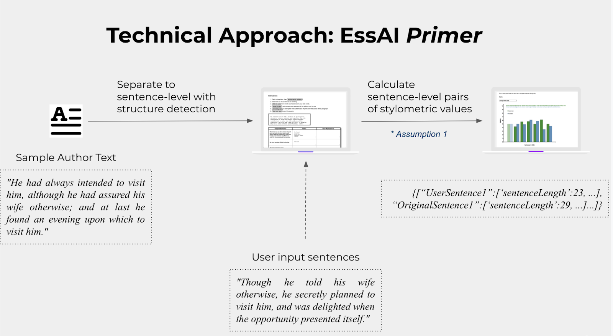
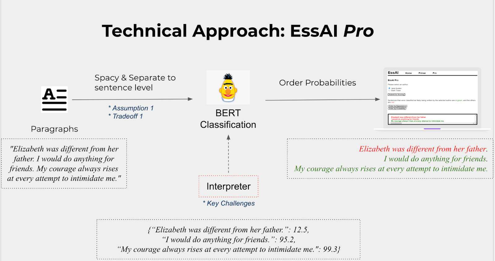
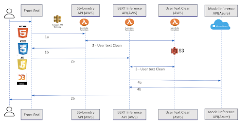

About
Writing is a vital skill. Unfortunately, it's difficult to apply the best pedagogical practices identified in other fields to writing [1].
In particular, writing is often not conducive to "deliberate practice" (DP), which is seen in the skill development literature as a particularly
efficient path to mastery in domains as diverse as chess, athletics, and even creative fields like music [2]. DP is characterized by instant feedback,
clear targets, and hyper-focused reflection on the exact nature of errors. All of those are challenging to provide in the writing context: papers can
take weeks to grade, the goal of "good writing" is hazy at best, and without a clear sense of their target, students can't possibly reflect on errors
at the resolution that DP demands.
To help make writing practice more rigorous and more scalable, EssAI uses machine learning to streamline and modernize some classic exercises [3] in writing
pedagogy that lend themselves to deliberate practice.
"This tool has the potential to be a more valuable resource to students of creative writing than any given assignment or exercise I've seen currently circulated at the undergraduate level.”
- Pilot User (Novelist & Writing Instructor)
[1] Kellogg, R.T., Raulerson, B.A. Improving the writing skills of college students. Psychonomic Bulletin & Review 14, 237–242 (2007).
https://doi.org/10.3758/BF03194058
[2] Ericsson, K. A., Krampe, R. T., & Tesch-Römer, C. (1993). The role of deliberate practice in the acquisition of expert performance.
Psychological Review, 100(3), 363-406. doi:10.1037/0033-295X.100.3.363
[3] Edward P. J. Corbett. “The Theory and Practice of Imitation in Classical Rhetoric.” College Composition and Communication, vol. 22,
no. 3, 1971, pp. 243–250. JSTOR, www.jstor.org/stable/356450. Accessed 14 Apr. 2021.
How It Works
- Solution Overview
EssAI Primer
Users will first select a sample paragraph from the author and EssAI Primer will separate paragraphs to sentence level,
offering some text structure hints. Then the user can blur original sentences and try to rewrite the context in their own understanding.
Popular stylometric metrics based on user feedback (built upon stylometric analysis from research papers [1]) are also calculated for each sentence pair as feedback for comparison.

EssAI Pro
Users will first type in paragraphs to be evaluated and select the author to be compared with.
EssAI Pro will clean the input texts and split them into sentence-level for BERT evaluation,
which will return authorship classification probabilities. Users will see color-coded sentences based on probabilities.

- System Architecture

- The front-end of EssAI is on Google Doc Extension in JavaScript, CSS and HTML.
- The data manipulation pipelines are deployed in AWS Lambda. Depending on the front-end request, Lambda will either return stylometric calculation or trigger BERT inference.
- Google Colab and Azure Machine Learning Service (AML) are used for model training and tracking.
- The final models are deployed as real-time inference endpoints on Azure Kubernetes Services (AKS) with GPU. Due to cost management, we pause our AKS cluster for most of the time. If you want to have a demo, please contact us.
- Model Architecture - BERT
Bidirectional Encoder Representations from Transformers (BERT) is published by Google AI in 2017, with application of the
bidirectional training of Transformer, a popular attention model, to language modelling [2]. By using a masked language model,
it is now possible to learn the context of each word from the words appearing both before and after it.
We mostly followed the BertAA: BERT fine-tuning for Authorship Attribution [5] implementation. We used the pre-trained BERT model
(BERT-base) with 12-layer, 768-hidden, 12-heads, 110M parameters that was trained on English text using 3.3 billion words total [3].
We freeze the entire architecture and attach a dense layer and a softmax layer to the architecture as fine-tuning for classification.
One difference we made was that instead of all authors belonging in one BERT model, we separated each writer for one BERT model.
The reason is because our users would probably not care how similar they are to other writers who are not their target author, and the
BERT model should serve its purpose to identify similarity to the one target author selected.
Additionally, to understand better how the “black box” BERT explains the style classification, we used an open-source library,
interpret-text [4], for model interpretability. It offers visualizations on the word-level local feature importance. However, as an
overhead, the library requires to use its own BERT wrapper (not compatible with self-implemented Hugging Face model). This restricts
some tuning opportunities for accuracy enhancement.
- Model Evaluation
We use classification accuracy as the evaluation metric. Different authors have very distinctive accuracies. We can reach 99.1% for
Jane Austen and 95.4% for Mark Twain. For some other authors that are not included in the final MVP scope, such as Scott Fitzgerald
and Charles Dickens, we ended at 60.3% and 72.6%.
To enhance the accuracy, we first tried to expand the datasets. Since we trained one BERT model for each author, each can have its
own dataset. Thus, we included more books from random authors into our pool. This method increased the accuracy for Mark Twain. We
also tuned several hyper-parameters, such as number of epochs, batch size, and max token length, but they did not give significant
enhancement. With the limitation of the BERT wrapper we implemented with the open source library interpret-text, unfortunately,
there were only few tuning parameters available.
Additionally, we tried to use 29 stylometric metric values as proxies for representing the text style, plug them into a simple
logistic regression, and evaluate the classification accuracy. We did not see much benefit out of the initial few experiments of
the stylometric logistic regression.
Apart from the train-validate-test dataset for famous authors’ books, we also evaluated our BERT models with the blog corpus [6]
to see how it reacted to daily/common text. We extracted 2000 randomly selected blogs, separated to sentence level, and evaluated
their similarity to Jane Austen and Mark Twain. As expected, the majority of sentences were identified as not similar to the target
author. For example, only 4000 out of 35000 sentences were marked as Jane Austen style.
- Model Future Development
Initially we have four authors within our MVP scope: Scott Fitzgerald, Charles Dickens, Jane Austen, and Mark Twain. With concerns
of Scott Fitzgerald and Charles Dickens model accuracies and potential misleading results, we decided to restrict our scope to be
Jane Austen and Mark Twain for our MVP.
However, by running BERT AutoML pipelines for Scott Fitzgerald and Charles Dickens with the existing datasets, we saw models could
reach 99.18% and 97.56% respectively. The tuning limitation might come from our BERT wrapper implementation from the interpret-text
library. Future development can look at developing Scott Fitzgerald and Charles Dickens models directly from Hugging Face pre-trained models.
- References
[1] https://github.com/Hassaan-Elahi/Writing-Styles-Classification-Using-Stylometric-Analysis
[2] https://towardsdatascience.com/bert-explained-state-of-the-art-language-model-for-nlp-f8b21a9b6270
[3] https://arxiv.org/pdf/1706.03762.pdf
[4] https://github.com/interpretml/interpret-text
[5] http://publications.idiap.ch/downloads/papers/2020/Fabien_ICON2020_2020.pdf
[6] https://u.cs.biu.ac.il/~koppel/BlogCorpus.htm